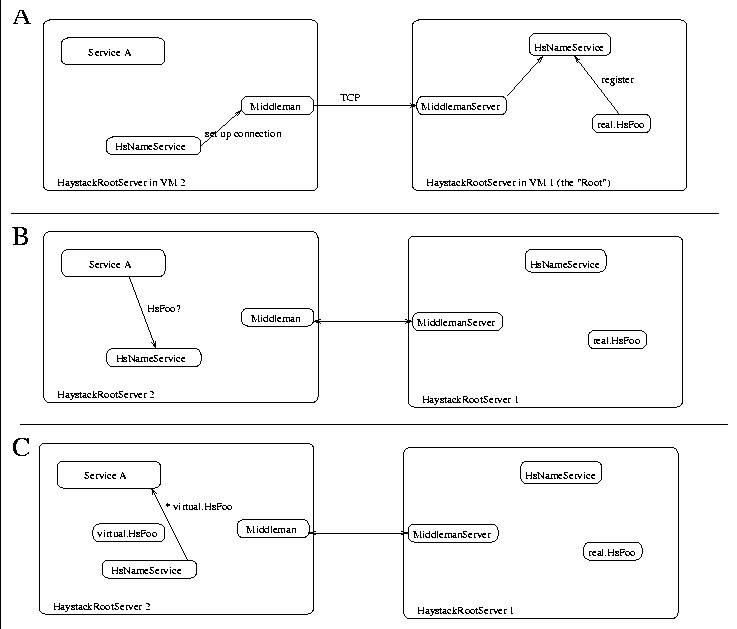

When initially selecting to work in Java it was necessary to decide how inter-process communication was to work in Haystack. Specifically, because Java processes run within the context of a Virtual Machine (VM), some mechanism is needed for communicating between processes running in seperate VMs. For example, Haystack specifies that a user always have one central HaystackRootServer. Perhaps this HaystackRootServer is running on the user's computer at home. If the user needs to query his Haystack from work, it is necessary to be able to interact with the main HaystackRootServer remotely. Additionally, as Haystack begins to support collaboration inter-VM communication will become vital.
The Middleman technology facilitates this inter-VM communication by implementing a form of remote procedure call (RPC). Java provides a built in method called Remote Method Invocation (RMI) for inter-VM communication. However, this implementation was evaluated to be two slow and complex for our purposes. Additionally, RMI is only provided in some implemenations of Java and may not be used in the future. Other solutions, such as CORBA and ILU [24] were too complex for our needs.
In implementing Haystack we wanted to provide a very simplistic mechanism for exporting the functions of one service so that a process running in a seperate VM would be able to invoke these functions as if they were in the local VM.
The general process for this communication model is fairly simple. When implementing a service that is to have exportable functions, three versions of the service are created. The first is the interface of the service. For example if we want to have an exportable service HsFoo, the interface will exist haystack.service.HsFoo. The implementation that does all the work will exist in haystack.service.real.HsFoo. The ``stub'' (or skeleton) implementation exists in haystack.service.virtual.HsFoo.
When the ``root'' HaystackRootServer is created it will load
a copy of the real.HsFoo service and a
MiddlemanServer. Figure  describes a
simplified interaction between a service A running in a
non-root VM with HsFoo.
describes a
simplified interaction between a service A running in a
non-root VM with HsFoo.

Figure: Abstract inter-service communication model
The actual model for the Middleman is much more complex and allows for multiple connections between VMs and a more complex method for passing ``packets'' between the VMs.